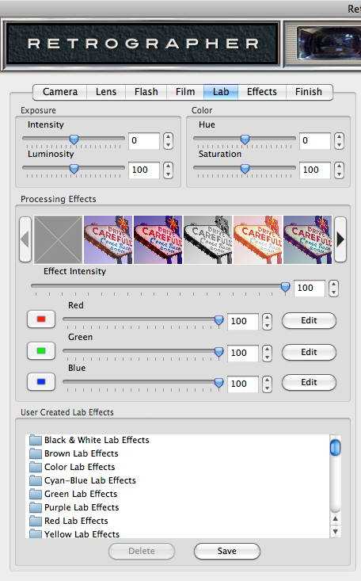
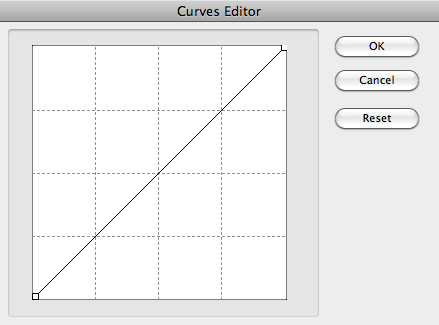

Let's Learn About Retrographer
Lab Settings
Once you've created the perfect photograph, there's nothing like having your own personal photo lab to make it perfect! Simply click the Lab tab along the top of the UI to access this section.

|
Adjust the Photograph
Push or pull any photograph exposure using the exposure control or refine the color and saturation of your photograph in the lab.
- Exposure Intensity - Increase or decrease the overall image exposure by moving the slider control or by simply entering a number in the text entry field to the right.
- Image Luminosity - Increase or decrease the overall image strength by moving the slider control or by simply entering a number in the text entry field to the right.
- Hue Adjustment - Click and drag the Hue slider control to adjust the overall color hue of your image.
- Saturation Adjustment - Click and drag the Saturation slider control to adjust the overall saturation of your image. Move the slider all the way to the left to fully desaturate the image to grayscale tones. As you adjust the Saturation slider control to the right, saturation increases. As the Saturation slider control reaches the far right, you'll see the most powerful almost neon saturation possible on your image without a loss of image quality or artifacts, we call this Super Saturation.
Lab Processing Effects
- Processing Effects Preset Picker - The first thing you may want to do is choose from our default preset processing effects you'd like to start working with. To do so, simply click the desired processing preset effect you'd like to use from the filmstrip picker by clicking on it. Click the arrows to the left and right of the picker to browse through the processing effects or to remove the processing effect, just click the grey box icon in the far left of the picker.
* NOTE - We've created loads of amazing lab presets, so if you can't find what you're looking for in the preset picker, check out the presets in the User Create Lab Effects area for plenty of great options! - Effect Intensity - Increase or fade the overall processing effect by moving the slider control or by simply entering a number in the text entry field to the right.
* NOTE - The Effect Intensity control will remain disabled until one of the three color processing effects (Red/Green/Blue) have been defined below. - Red/Green/Blue Processing Effects - To emphasize or reduce the appearance of a specific color tone in your image, we've created an easy way to work with each color tone in your image to create authentic cross-processing effects.
You'll notice each color has both a slider control and an Edit button. The slider will remain disabled until a color tone adjustment has been performed using the Edit Button. When the slider is at the far right position the color effect is fully applied and is reduced as the slider moves to the left. To adjust the color tone, simply click the Edit button which will launch the color tone curves editor.
Once launched, a small box will appear with a diagonal line which represents the range of the color within the image. To adjust the highlight tones of the color, simply click and drag the end point on the upper right corner of the line and move it where desired. To adjust shadow tones of the color, click the end point on the lower left hand corner of the line and move to where desired. You'll notice as the line changes, the preview to the right adjusts in realtime to show how your adjustments change the image.
At any time you can adjust any value in between the highlight and shadow color tones by simply clicking on the diagonal line at any place which will automatically create a point you can then drag to the desired position. At any time, the point may be moved by clicking and dragging. To remove a point, simply hold down the Command (Apple) key (or the Ctrl key on Windows) then click the point you'd like to remove. If you decide to start over, simply click the reset button to the right, otherwise click the OK button to apply your changes or the Cancel button to close the window without adjusting the color tone adjustments.
This can be repeated for each of the three color tones in the image till you've achieved the desired cross-processing effect. After one or more of the color tone adjustments have been made, both the color tone slider control and the effect intensity control will be enabled.
User Created Lab Effects - The User Created Lab Effects dialog allows you to save or apply previously saved lab settings to the image you're working with, and we've created a tom of great lab effects to get you started. Once you've created a lab setting you like, click the Save button, name the setting and click OK to save this setting. To recall and apply a setting, simply click on the setting name in the dialog box. To delete a setting, simply click its name in the dialog box and click the Delete button.
Working with the Preview Window
- Preview Options - Above the Preview window at right, you'll notice some viewing options. By default the Composite option is selected to show you what all combined tabbed section effects look like applied to the image. At any time you can click the Original option to toggle between the unaffected image and a preview of the filtered image with all effects applied or click the Lab Effects option to view just the lab effects applied to the image.
- Magnifying the Preview - Below the Preview window, you'll see the magnification controls. By clicking the appropriate icon (- or +), you can increase or decrease the magnification of the Preview window. The current level of magnification is shown between the magnification icons.
- Moving the Preview - When you have increased magnification and wish to view the texture effect on the rest of the image not visible in the Preview window, simply move your mouse into the Preview window and click and drag your image around to reveal the texture effected image.